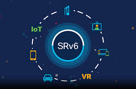

Have you heard about the advances in 6G technology? It is being described as the mobile network of the future, with features such as high-precision positioning, higher speeds, and integrated sensing. Even so, I would like to learn more about its use cases and when it could reach the market, since many people mention 2030 as a reference point. In addition, I have also heard that the ITU is already working on the evolution of optical networks so they can support this new generation.
Follow Me on LinkedInHave you heard about SRv6? It is a technology based on IPv6 that enables network routing in a more flexible, scalable, and programmable way. I find it very interesting because it not only helps direct traffic more efficiently, but it can also simplify the operation of modern networks and improve traffic engineering. Even so, I would like to learn more about its use cases, its advantages over other technologies, and the impact it could have on the future of telecommunications and network infrastructures.
